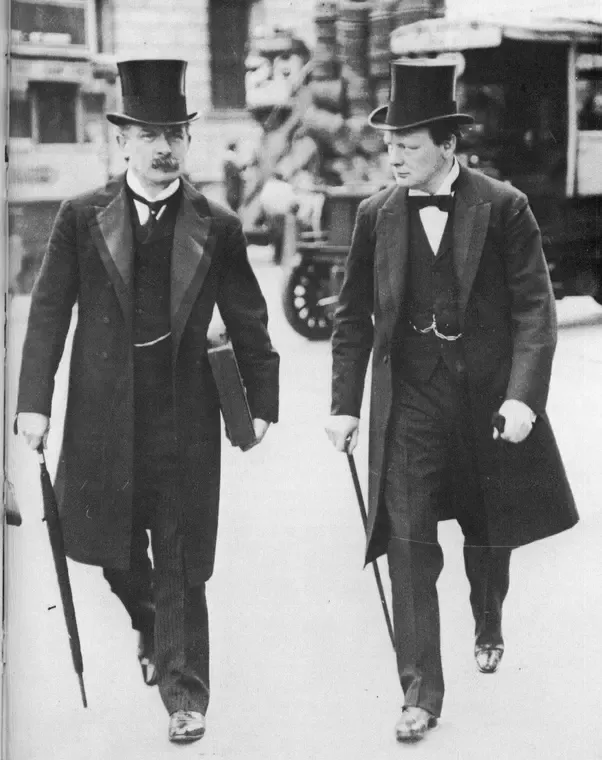
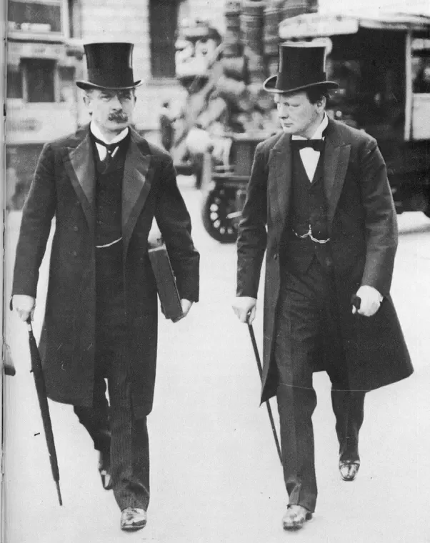

A call for Reform dress had begun in the mid 19th century, as men and women argued that the amount of women’s underclothing, the constrictive corset, and the sheer weight of women’s clothes were all harmful to women’s health.
Aesthetic or artistic dress was sparked by influential artists and designers .
Paintings increased the popularity of the style, at first within the art community, and then more widely.

The fashionable silhouette of the 1830s was created by a series of undergarments .
In addition to the requisite long, tightly-laced corset, the giant leg-o-mutton sleeves also
necessitated support to maintain their shape

Menswear reflected many of the same influences in womenswear.
Indeed, the general silhouette of men’s clothing resembled that of women’s.
Coats nipped in at the waist, their skirts flared, and most notably, sleeves featured a marked fullness t
hat puffed at the shoulder, echoing the gigot sleeves of female fashions.

During the day, the dress coat and frock coat were worn with trousers, which were usually a lighter color than the coat.
Trousers were generally narrowly fitted and featured instep straps around the foot to maintain a firm line; a fashionable choice.

Boys remained in dresses, like their sisters, with white drawers underneath until about age three or four,
when they were breeched, a symbolic act of donning their first trousers. They then entered a transitional phase in which they were still too young for trousers and jackets (Rose 91). Instead, from ages three to seven or eight, boys wore tunic-dresses over trousers (Fig. 4). These tunics could take many forms, from those much like a man’s frock coat, to loosely-cut versions that were worn with a wide belt (Buck 119; Rose 93-94).
By eight years of age, a boy moved into jackets and trousers, and was then considered fully breeched (Callahan).

Fashions for young girls were modeled after adult styles. One of the only distinguishing features was the length of the skirt. During the 1830s, the hemline was calf-length for young girls, lengthening as she aged. Young girls’ dresses were cut
with low necklines, almost off-the-shoulder and often featured elbow-length sleeves, another element that was unique to childhood


 
